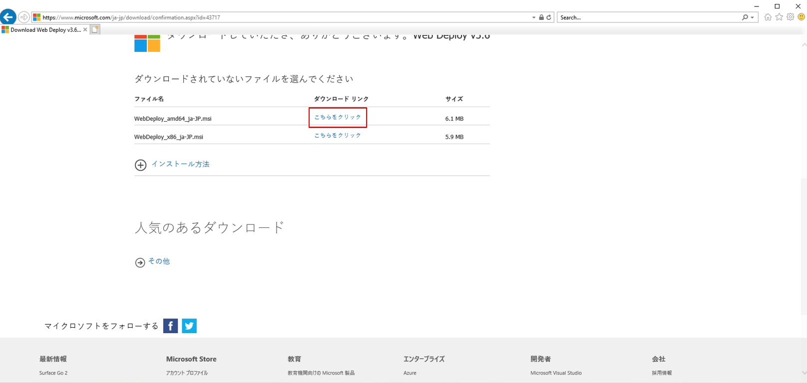

7. Web Deployのインストール
今度はVisual StudioからAzureにデプロイを簡略化するためにWeb Deployをインストールします．
こちらのURLをWindowsServerのIEへコピペして移動します．
セキュリティ面での制限で画面が崩れている場合がありますが，ダウンロード出来るので以下の64bit側をダウンロードします．

ダウンロードしたWebDeoloy_amd64_ja-JP.msiをダブルクリックして以下の通り，インストールします．
※標準インストールではないことに注意してください．


以降はファイルをダウンロードしないのでIEを開き，Internet optionsを戻しておきます．